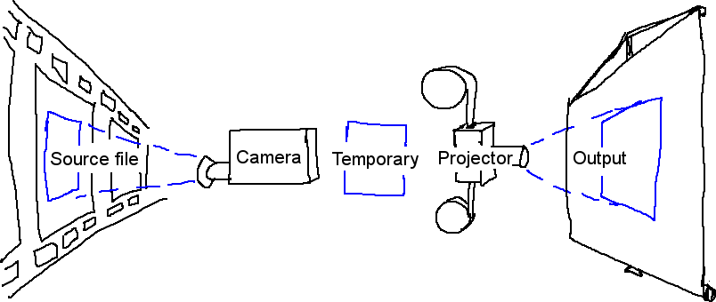
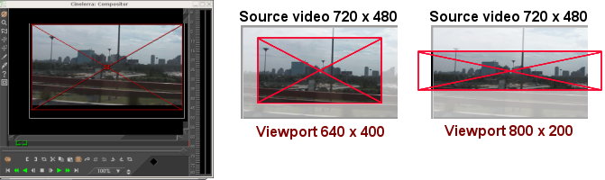

zoom menu and a
zoom menu and a  tally light.
tally light.
| [ << ] | [ >> ] | [Top] | [Contents] | [Index] | [ ? ] |
This window displays the output of the timeline. It is the interface for most compositing operations or operations that affect the appearance of the timeline output. Operations done in the Compositor affect the timeline but do not affect clips.
The video output has several navigation functions. The video output size is either locked to the window size or unlocked with scrollbars for navigation. The video output can be zoomed in and out and panned. Navigating the video output this way does not affect the rendered output; it just changes the point of view in the compositor window.
If it is unlocked from the window size, middle clicking and dragging anywhere in the video pans the point of view.
Hitting the + and - keys zooms in and out of the video output.
Underneath the video output are copies of many of the functions available in
the main window. In addition there is a
zoom menu and a tally light.
The zoom menu jumps to all the possible zoom settings and, through the Auto option, locks the video to the window size. The zoom menu does not affect the window size.
The tally light turns red when rendering is happening. This is useful for knowing if the output is current.
Right clicking anywhere in the video output brings up a menu with all the zoom levels and some other options. In this particular case the zoom levels resize the entire window and not just the video.
The reset camera and reset projector options center the camera and projector See section Compositing.
The Hide controls option hides everything except the video.
On the left of the video output is a toolbar specific to the compositor window. Here are the functions in the toolbar:
This disables changes to the compositor output from clicks in it. It is an extra layer on top of the track arming toggle to prevent unwanted changes.
This tool  zooms in and out of the compositor
output without resizing the window. If the video output is currently locked to
the size of the window, clicking in it with the magnifying glass unlocks it and
creates scrollbars for navigation.
zooms in and out of the compositor
output without resizing the window. If the video output is currently locked to
the size of the window, clicking in it with the magnifying glass unlocks it and
creates scrollbars for navigation.
Left clicking in the video zooms in.
Ctrl clicking in the video zooms out.
Rotating the wheel on a wheel mouse zooms in and out.
This tool  brings up the mask editing tool See section Masks.
Enable the
brings up the mask editing tool See section Masks.
Enable the  tool window to see options
for this tool.
tool window to see options
for this tool.
This tool  brings up the camera editing tool
See section The camera and projector. Enable the
tool window to see options for this
tool.
brings up the camera editing tool
See section The camera and projector. Enable the
tool window to see options for this
tool.
This tool  brings up the projector
editing tool See section The camera and projector. Enable the
tool window to see options for this
tool.
brings up the projector
editing tool See section The camera and projector. Enable the
tool window to see options for this
tool.
This tool brings up the cropping tool
See section Cropping. The tool window must
be enabled to use this tool.
This brings up the eyedropper. The eyedropper detects whatever color is under
it and stores it in a temporary area. Enabling the
tool info shows the currently selected color.
Click anywhere in the video output to select the color at that point.
The eyedropper not only lets you see areas which are clipped, but its value can
be applied to many effects. Different effects handle the eyedropper
differently.
This tool button works only in
conjunction with the other controls on the compositor. Based on what
compositing control is active the toggle button will activate/deactivate the
appropriate control dialog box.
Controls with dialog boxes are:
This tool  draws the safe regions in the video
output. This does not affect the rendered output See section Safe regions.
draws the safe regions in the video
output. This does not affect the rendered output See section Safe regions.
A large amount of Cinelerra's binary size is directed towards compositing. When you remove the letterboxing from a widescreen show, you are compositing. Changing the resolution of a show, making a split screen, and fading in and out among other things are all compositing operations in Cinelerra. Cinelerra detects when it is in a compositing operation and plays back through the compositing engine only then. Otherwise, it uses the fastest decoder available in the hardware.
Compositing operations are done on the timeline and in the Compositor window. Shortcuts exist in the Resource window for changing some compositing attributes. Once some video files are on the timeline, the compositor window is a good place to try compositing.
In the compositor window, the most important functions are the
camera button and the
projector button. These control
operation of the camera and projector. Cinelerra's compositing routines use a
"temporary", a frame of video in memory where all graphics processing is
performed. Inside Cinelerra's compositing pipeline, the camera determines where
in the source video the "temporary" is copied from. The projector determines
where in the output the "temporary" is copied to.

The process is pretty much as if we scanned in a roll of film one frame at a time, then (using Gimp, for example) digitally altered the scanned image with various filters. Once the image has been transformed by the filters (color correction, for example) we then project the finished image back into a new roll of film, thus creating a new "modified" version of the original.
Each track has a different "temporary" which is defined by the track size. By resizing the tracks you can create split screens, pans, and zooms.

Visual representation of the compositing pipeline
When editing the camera and projector in the compositing window, the first track with record enabled is the track affected. Even if the track is completely transparent, it is still the affected track. If multiple video tracks exist, the easiest way to select one track for editing is to SHIFT-click on the record icon of the track. This solos the track.

The purpose of the projector is to place the contents of the "temporary" into the project's output. The intent of the projector is to composite several sources from the various tracks into one final output track.
The projector alignment frame is identical to the camera's viewport, except that it guides where on the output canvas to put the contents of each temporary.

When the projector button is enabled in the compositor window, you are in projector editing mode. A guide box appears in the video window. Dragging anywhere in the video window causes the guide box to move, hopefully along with the video. SHIFT-dragging anywhere in the video window causes the guide box to shrink and grow along with the video. Once you have positioned the video with the projector, you are ready to master the camera.
Select the camera button to enable camera
editing mode. In this mode, the guide box shows where the camera position is
in relation to past and future camera positions but not where it is in relation
to the source video. Dragging the camera box in the compositor window does not
move the box but instead moves the location of the video inside the box.
The viewport is a window on the camera that frames the area of source video to be scanned. The viewport is represented as a red frame with diagonal cross bars.

The viewport

Viewport sizes
The size of the viewport is defined by the size of the current track. A smaller viewport (640x400) captures a smaller area. A larger viewport (800x200) captures an area larger than the source video and fills the empty spaces with blanks.
Once we have our viewport defined, we still need to place the camera right above the area of source video we are interested on. To control the location of the camera:
When we drag over the viewport in the compositor window (although initially counter-intuitive), the viewport does not moves but the area of video that sits under the camera's location does, like when watching the output of a moving camera.

In the compositor window, the viewport is always
shown centered, what moves is the video under it
For example, when you drag the camera down, the viewport in effect is moving downwards on the video, showing its path towards the bottom of the video, but from our perspective on the compositor screen, we see the video moving up. When you drag the camera right, the video seems to move left, and so on.
Note: The guide box shows where the camera position is in relation to past and future camera positions, not where it is in relation to the source video.
In the compositing window, there is a popup menu of options for the camera and projector. Right click over the video portion of the compositing window to bring up the menu.
The camera and projector have shortcut operations that do not appear in the
popup menu and are not represented in video overlays. These are accessed in the
Tool window.
Most operations in the Compositor window have a tool window which is enabled by
activating the question mark.

The camera and projector tool window
In the case of the camera and projector, the tool window shows x, y, and z coordinates. By either tumbling or entering text directly, the camera and projector can be precisely positioned. 9 justification types are also defined for easy access. A popular justification operation is upper left projection after image reduction. This is used when reducing the size of video with aspect ratio adjustment.
 Left
Left
 Right
Right
 Top
Top
 Center Vertical
Center Vertical
 Bottom
Bottom
The translation effect allows simultaneous aspect ratio conversion and reduction but is easier to use if the reduced video is put in the upper left of the temporary instead of in the center. The track size is set to the original size of the video and the camera is centered. The output size is set to the reduced size of the video. Without any effects, this produces just the cropped center portion of the video in the output.
The translation effect is dropped onto the video track. The input dimensions of the translation effect are set to the original size and the output dimensions are set to the reduced size. To put the reduced video in the center subsection that the projector shows would require offsetting out x and out y by a complicated calculation. Instead, we leave out x and out y at 0 and use the projector's tool window.
Merely by selecting  left justify and
left justify and
 top justify, the projector displays the reduced
image from the top left corner of the temporary in the center of the output.
top justify, the projector displays the reduced
image from the top left corner of the temporary in the center of the output.
Masks select a region of the video for either displaying or hiding. Masks are also used in conjunction with another effect to isolate the effect to a certain region of the frame. A copy of one video track may be delayed slightly and unmasked in locations where the one copy has interference but the other copy does not. Color correction may be needed in one subsection of a frame but not another. A mask can be applied to just a subsection of the color corrected track while the vanilla track shows through. Removal of boom microphones, airplanes, and housewives are other mask uses.
The order of the compositing pipeline affects what can be done with masks. Mainly, masks are performed on the temporary after effects and before the projector. This means multiple tracks can be bounced to a masked track and projected with the same mask.
Our compositing pipeline graph now has a masking stage. There are 8 possible masks per track. Each mask is defined separately, although they each perform the same operation, whether it is multiplication or subtraction.

Compositing pipeline with masks
To define a mask, go into the Compositor window and enable the
mask toggle. Now go over the video and click-drag.
IMPORTANT: You have to select automatic keyframes (See section Automatic keyframes,) if you wish to move a mask over time. If you do not select automatic keyframes, the mask position will be the same even if you edit at different places on the timeline.

Click-drag again in another part of the image to create each new point of the mask. While it is not the conventional Bezier curve behavior, this masking interface performs in realtime what the effect of the mask is going to be. Creating each point of the mask expands a rubber band curve.
Once points are defined, they can be moved by CTRL-dragging in the vicinity of the corner.

CTRL-drag allows you to move existing points to
new locations, thus altering the shape of the mask
This, however, does not smooth out the curve. The in-out points of the Bezier curve are accessed by SHIFT-dragging in the vicinity of the corner. Then SHIFT-dragging near the in or out point causes the point to move.

SHIFT-drag activates belzier handles
to create curves between mask points
Finally, once you have a mask, the mask can be translated in one piece by CTRL-ALT-dragging the mask. Mask editing in Cinelerra is identical to how The Gimp edits masks except in this case the effect of the mask is always on.

CTRL-ALT-drag translates an entire mask
to a new location on the screen
The masks have many more parameters which could not be represented with video
overlays. These are represented in the tool window for masks. Selecting the
question mark when the
mask toggle is highlighted brings up the mask options.

Mask options window
The mode of the mask determines if the mask removes data or makes data visible. In subtraction mode, the mask causes video to disappear. In multiplication mode, the mask causes video to appear and everything outside the mask to disappear.

Mask mode
The value of the mask determines how extreme the multiplication or subtraction is. In subtraction mode, higher values subtract more alpha. In multiplication mode, higher values make the region in the mask brighter while the region outside the mask is always hidden.

Mask value
The mask number determines which one of the 8 possible masks we are editing. Each track has 8 possible masks. When you click-drag in the compositor window, you are only editing one of the masks. Change the value of mask number to cause another mask to be edited. The previous mask is still active but only the curve overlay for the currently selected mask is visible.
When multiple masks are used, their effects are ORed together. Every mask in a single track uses the same value and mode.
The edges of a mask are hard by default but this rarely is desired. The feather parameter determines how many pixels to feather the mask. This creates softer edges but takes longer to render.

Feather parameter
Note: The OpenGL mask renderer is of low quality and only suitable as a preview for initial work. For fine-tuning of masks (with large feather values) OpenGL should be switched off and the software renderer be used.
Finally, there are parameters which affect one point on the current mask instead of the whole mask. These are Delete, x, y. The active point is defined as the last point dragged in the compositor window. Any point can be activated merely by CTRL-clicking near it without moving the pointer. Once a point is activated, Delete deletes it and x, y allow repositioning by numeric entry.
Cropping reduces the visible picture area of the whole project.
It changes the values of the output dimensions (width and height in pixels)
and the X Y values of the projector in a single operation.
Since it changes project settings it affects all the tracks for their
entire duration and it is not keyframable.
Enable the crop toggle and the
tool window in the compositor
window to display the Crop control dialog box.

Crop control dialog box
Click-drag anywhere in the video to define the crop area. This draws a
rectangle over the video.

Crop area defined
Click-drag anywhere in the video to start a new rectangle.
Click-drag over any corner of the rectangle to reposition the corner.
ALT-click in the cropping rectangle to translate the rectangle to any
position without resizing it.
The crop control dialog allows also text entry of the top left coordinates
(X1,Y1) and bottom right coordinates (X2,Y2) that define the crop
rectangle.
When the rectangle is positioned, hit the Do it button in the crop control
dialog to execute the cropping operation: the portion of the image outside
the rectangle will be cut off and the projector will make the output fit the
canvas.
The Set Format window will show the new project Width and Height values.
The projector tool window will show the new X Y values.
Track size will remain unchanged.
To undo the cropping enter the original project dimensions in the Set Format
window and click on Reset projector in the popup menu of the compositor.
On consumer displays the borders of the image are cut off and within the
cut-off point is a region which is not always square like it is in the
compositor window. The borders are intended for scratch room and vertical
blanking data. You can show where these borders are by enabling the
safe regions toggle. Keep titles inside the inner
rectangle and keep action inside the outer rectangle.
Every video track has an overlay mode, accessible by expanding the track. The overlay mode is a pull-down menu on the left under the fader. When collapsed, it displays an icon representing the current overlay mode.
Select the  expand track toggle to view all
the options for a video track if you can not see the overlay mode. The overlay
mode of video tracks is normal by default. Select other modes by clicking
the overlay button and selecting an item from the popup menu.
expand track toggle to view all
the options for a video track if you can not see the overlay mode. The overlay
mode of video tracks is normal by default. Select other modes by clicking
the overlay button and selecting an item from the popup menu.
Overlay modes are processed inside the projector stage of compositing. The different modes are summarized below.
The size of the temporary and the size of the output in our compositing pipeline are independent and variable. This fits into everything covered so far. The camera's viewport is the temporary size. Effects are processed in the temporary and are affected by the temporary size. Projectors are rendered to the output and are affected by the output size. If the temporary is smaller than the output, the temporary is bordered by blank regions in the output. If the temporary is bigger than the output, the temporary is cropped.
The temporary size is defined as the track size. Each track has a different size. Right click on a track to bring up the track's menu. Select Resize Track to resize the track to any arbitrary size. Alternatively you can select Match output size to make the track the same size as the output.

The resize track window
For example, the next image shows how a video track and a project output of equal sizes look when displayed on the compositor.

Project output size and video
track with equal dimensions (720x480)
If you resize a track, then its appearance on the compositor changes accordingly.
Reducing the track (to 640 x 400) and leaving the project's output size untouched makes the track show on the compositor smaller and framed by a blank area.

New track (640x400), smaller
than the project's output (720x480)
Enlarging the track (to 800 x 560) and leaving the project's output size untouched makes the track show on the compositor larger and cropped to the output's dimension.

New track (800x560), cropped to
the project's output size (720x480)
Using this relationship between the track and the project's output size you can effectively reduce or magnify the size of a particular track with regards to the final output and therefore create visual "effects" like split screens, pans, and zooms on the compositor.
The output size is set in either New when creating a new project or Settings->Format. In the Resource window there is another way to change the output size. Right click on a video asset and select Match project size to conform the output to the asset. When new tracks are created, the track size always conforms to the output size specified by these methods.
When rendering, the project's output size is the final video track size where the temporary pipeline is rendered into.
If the output size is larger than the temporary then the image transferred from the temporary will fit inside the Output Track. Any space left on the Output is left blank.

Output size (shown in green) larger than the temporary
If the output size is smaller than the temporary then some of the temporary video will be cropped out.

Output size too small for the temporary
| [ << ] | [ >> ] | [Top] | [Contents] | [Index] | [ ? ] |
This document was generated on February, 18 2016 using texi2html 1.76.